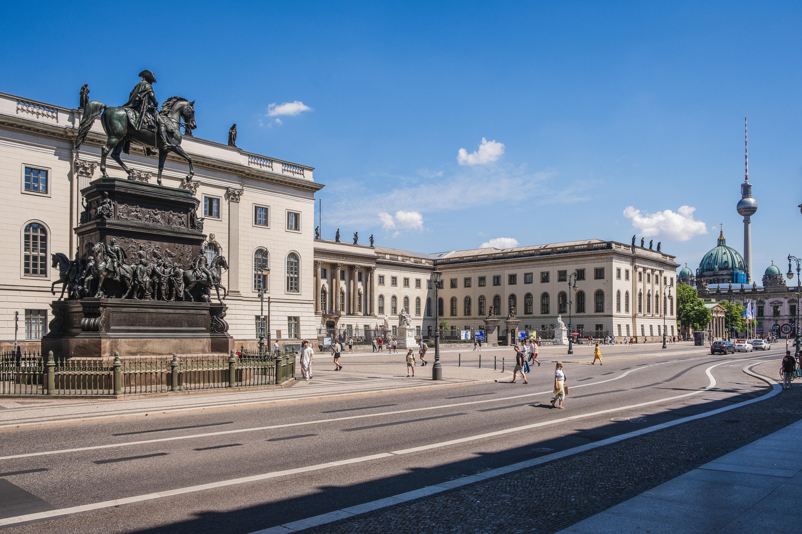

Call for Papers
Overview
Organized by Project A09 of the SFB 1412 "Register", this workshop explores the complex and multifaceted links between diatopic (geographic), diastratic (social), and diaphasic (register/situational) variation.
The workshop is dedicated to studies on Spanish and its varieties, investigating how speakers navigate linguistic choices across different social and geographic landscapes in the Hispanic world. As well as examining how intra-individual linguistic choices are shaped by situational settings, functional purposes, and the social/geographic backgrounds of speakers. Key topics include diaglossia the development of regional standards, and the influence of register knowledge on linguistic variation.
Important Dates
- Deadline: March 31, 2026
- Notification: April 15, 2026
- Workshop: June 8-10, 2026
Submit your abstract (300-500 words) to:
workshopontheinterplay@gmail.comTopics of Interest
We welcome submissions addressing the interplay between register, social backgrounds, and geographic variation in Spanish and its varieties:
- Morphosyntactic Variation: Studies on any morphosyntactic variable exhibiting diastratic stratification or register-based sensitivity within Spanish.
- The Diaglossic Situation: Analysis of regional standards, regiolects, and the interaction between local, regional, and national norms in the Hispanic world.
- Formality and Register: The role of situational-functional parameters (e.g., formality, social distance, communicative purpose).
- Language Ideologies & Metalinguistic Awareness: The impact of prestige, linguistic identity, and social meaning on variant selection.
- Standardization and Leveling: Processes of standardization "from above" or "from below", and register flexibility in Spanish-speaking communities.
- Methodological Innovation: Combining usage-based corpus analysis with experimental research (attitudinal, perceptional, or production-based).
Venue

Main Building
Humboldt-Universität zu Berlin
Unter den Linden 6, 10117 Berlin, Germany
Schedule & Rooms
Rooms: 1066e & 2070A
Closing sessions (Check final program)
Organizing Committee
Prof. Dr. Miriam Bouzouita
Humboldt-Universität zu Berlin
Dr. Johnatan E. Bonilla
Humboldt-Universität zu Berlin
Alejandra Bastias
Humboldt-Universität zu Berlin
Andrea Betti
Humboldt-Universität zu Berlin